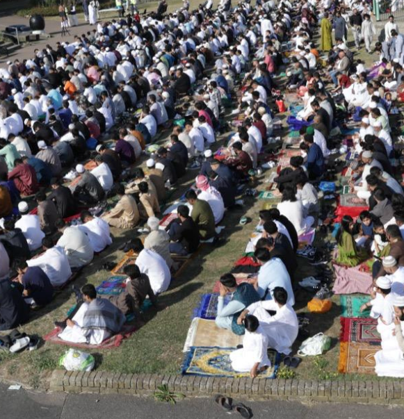
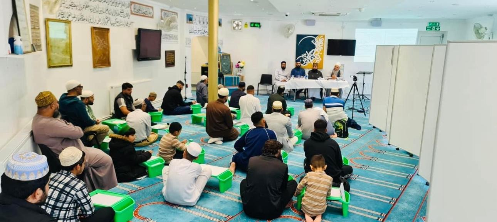
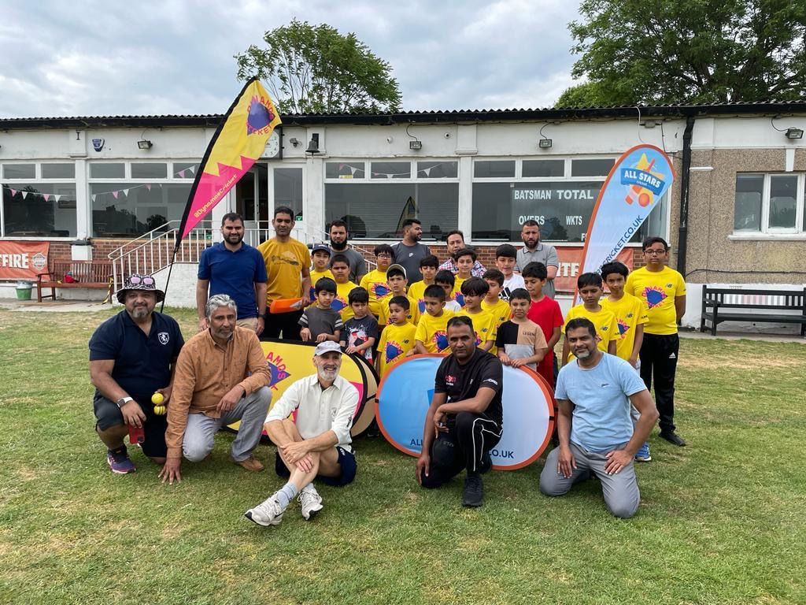
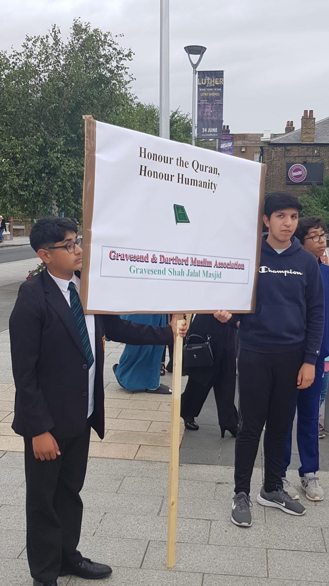

Vote Team BLUE
2024 GDMA Elections
Meet Our Candidates

Bilal Farooq
Standing for Chairman

Imran Tahir
Standing for Secretary

Adnan Khan
Standing for Treasurer
Waqar Ahmad
Standing for Executive Member
Omar Ilyas
Standing for Executive Member
Shiyamin Mohamed
Standing for Executive Member
Yahaya Alawoki
Standing for Executive Member
Mark Your Calendar
📅 7th December 2024
⏰ 8:00 AM - 8:00 PM
Important Information
- ✓ Bring your valid ID
- ✓ TEXT
- ✓ TEXT
- ✓ Your vote is confidential and secure
Meet Our Team
Bilal Farooq - Standing for Chairman
My name is Bilal Farooq, and I am honored to stand as a candidate for the Chairman of the Gravesend and Dartford Muslim Association in the 2024 election. My journey has been shaped by a strong educational foundation, diverse professional experiences, and a deep commitment to community service. I hold a Bachelor's degree in Civil Engineering from the University of Engineering and Technology, Lahore, Pakistan, and a Master's degree in Construction Management and Economics from a UK university.
My professional career began in Saudi Arabia, where I worked as an engineer, followed by a role as a sub-agent in a major construction group in the UK until 2010. Since then, I have been self-employed in the home improvement business. In 2012, I joined the Gravesend and Dartford Muslim Association as an executive member, and in 2021, I was elected Chairman.
Under my leadership, we have achieved significant milestones, including organizing Eid in the Park in collaboration with Shah Jalal Mosque, leading initiatives such as Interfaith Taste Ramadan, Interfaith Walk, and School Visits, and coordinating the Flag Raising Ceremony. I also organized a protest against the burning of the Quran, uniting local leadership to stand against hate, and conducted Q&A sessions with A-level students to promote understanding of our faith. I also took the initiative to take part in the million march for Palestine to represent the Gravesham community as well as organising the career workshop.
If re-elected as Chairman, I am committed to giving back to the community by introducing new youth members and fresh faces who are ready to serve with exciting new policies. We will hold youth workshops and utilize online platforms to gather ideas and create youth sub-committees for future initiatives. Our manifesto will soon be introduced, and our candidates will be visiting you to explain our policies and engage with the community. I am passionate about fostering interfaith dialogue, enhancing community services, and supporting the growth and development of our community. Together, we can build a stronger, more inclusive future.
Imran Tahir - Standing for Secretary
Imran was born in Gravesend and has been connected to our mosque from a young age.
Imran has served as an executive member for the past three years, in which time he has made a number of important contributions including serving on the Education committee.
This year alone he has claimed Gift Aid on behalf of the mosque, arranged security guards for the mosque through the Home Office, and produced a guide to explain the funeral process to those with deceased family members.
Professionally, he works as a research economist. He has presented his research to the government, the civil service and at international conferences.
His research has featured many media outlets, including the BBC and The Financial Times.
Imran holds degrees from LSE and UCL and is currently completing his PhD in Economics.
Adnan Khan - Standing for Treasurer
Adnan is a chartered accountant with over 30 years of experience in 5 different countries. He is the first Muslim non-Executive director of three multinational companies.
Insha’Allah this will be the first time since the early 1990s that our Treasurer will be a chartered accountant.
Adnan has built a strong connection with the Gravesend mosque. He performed Itikaf here in 2022 and is committed to advancing our mosque.
Adnan is already actively involved in charity with Future Frontiers. He wants to bring career coaching and mentoring to young people in our community.
Adnan is ready to serve our community. Let’s support him in delivering for us.
Waqar Ahmad - Standing for Executive Member
Waqar was born and raised in Gravesend and has been connected to the mosque and community from a young age.
He works as a software developer and has a degree in computer science. These skills will be crucial to building our mosque’s IT infrastructure.
Waqar is passionate about giving back to his community and progressing the development of the masjid.
He wants to ensure that young people have a voice in shaping the future of our community.
Join us in supporting our community’s next generation of leaders.
Omar Ilyas - Standing for Executive Member
Omar has a wealth of experience in business development, holding senior roles with global brands like Hamleys. He is currently leading the expansion of Creams dessert franchise into the Middle East.
Omar has a degree in Economics and Statistics. He has worked internationally and is fluent in several languages, including Arabic and Spanish, which gives him a unique ability to connect with our diverse community.
Since moving to Gravesend, where his children attend the madrasah, Omar has been inspired by the strength and unity of our local Muslim community.
Omar has always been close to charitable projects and is eager to give back. He wants to lead outreach programs that will strengthen the integration of the Muslim community in Gravesham and build connections with other faith groups.
Omar is ready to make a meaningful impact. Let’s support him as he steps forward to serve our community.
Shiyamin Mohamed - Standing for Executive Member
Shiyamin has founded and served as President of his own charity (Sokians UK) for the past 14 years. A UK registered charity that helps disadvantaged children in Sri Lanka.
He has extensive professional experience as an ICT technical lead working across government, the NHS, and even the United Nations!
For the past three years Shiyamin has been a tireless volunteer in the GDMA children’s football and runs the GDMA badminton club.
Shiyamin is passionate about volunteering and Insha’Allah will be bring so much to our community!
Yahaya Alawoki - Standing for Executive Member
Yahaya was a volunteer at his previous local mosque in Plymouth. He and his family recently came to Gravesend and he is committed to continuing serving his community.
He is a financial analyst at Vodafone with over 10 years of experience in retail management and commercial analysis, bringing a lot of real-world knowledge to our association.
One of Yahaya’s main goal is to encourage Islamic education and tilawat among our youth, helping them deepen their connection to their faith.
Yahaya is committed to serving the community with integrity and creating an inclusive environment for all members.
Support Yahaya as he helps lead our community towards a stronger, more unified future.
Campaign Videos
Campaign Message
Watch our campaign message from our Chairman
Chairman
Secretary
Treasurer
Executive Member
Executive Member
Executive Member
Executive Member
Our Track Records
🌳 Eid in the Park
📚 Huge improvements to GDMA Madrasah
🏆 Children's and Adult's Sports Club
🕊 Protests against burning of the Qur’an
- 🏠 Purchase of residence for Imam
- ♀️ Creation of women’s committee
- 👴 Regular social activities for senior citizens
- 🎓 Careers day for young people
- 🛡 Arranged Security Guards for Mosque
Our Vision
📘 Education: Supporting learning for all
Education is central to our community’s strength. We will expand learning opportunities for all ages, ensuring access to knowledge and spiritual growth for everyone.
- Tafsir classes in English: These new classes will help us all connect more deeply with our faith.
- Women’s classes: Regular classes for women during the day to provide opportunities for our sisters.
- Classes for children with Special Educational Needs (SEN):We’ll provide dedicated classes to support children with SEN, creating an inclusive learning environment where every child can succeed.
🌹 GDMA Funeral Fund: Support in times of need
No family should have to worry about financial burdens in times of loss. We will establish the GDMA Funeral Fund, which will collect a small annual amount to cover funeral and burial costs. This is a model that has been adopted in many other mosques across the country and will provide essential support when it’s needed most.
🌸 Sister’s activities: a welcoming space for all
We’ve established a women’s sub-committee but there’s a lot more to do. we’re committed to expanding programmes that serve the needs and interests of our sisters. This includes educational workshops and social gatherings that create meaningful opportunities for our sisters can be an active part of the mosque.
🌟 Youth Engagement: empowering the next generation
Our young people are the future of our community, and we’re committed to giving them a voice and opportunities to lead.
- Youth committee: Establish a youth committee to give young people a platform in decision-making and a say in shaping the future of the mosque.
- Expanded summer activities: Build on our existing sports groups by organising regular activities during the summer holidays.
- Leadership Development: Introduce workshops and mentoring programmes to help our youth build essential skills and prepare for future roles within the community.
🛠 Upgrading and expanding our mosque
Education is central to our community’s strength. We will expand learning opportunities for all ages, ensuring access to knowledge and spiritual growth for everyone.
- Tafsir classes in English: These new classes will help us all connect more deeply with our faith.
- Women’s classes: Regular classes for women during the day to provide opportunities for our sisters.
- Classes for children with Special Educational Needs (SEN):We’ll provide dedicated classes to support children with SEN, creating an inclusive learning environment where every child can succeed.
🕌 Building a new mosque for the future
Our community is expanding, and we need a mosque that reflects this growth. We’re committed to working toward a purpose-built mosque in Gravesend that will serve as a welcoming space for prayer, education, and community gatherings. This new mosque will be a lasting resource for us and for future generations.
Manifesto